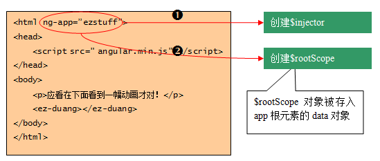

引导第2步：创建根作用域
AngularJs的基础思想：scope对象是AngularJS实现数据绑定的重要服务，
所以，在引导启动建立了注入器之后， AngularJS马上在应用的根节点上创建一个根作用域：$rootScope对象。
示例图： 
使用说明: 如果是自动引导启动，那么ng-app所在的DOM节点对应着根作用域。
如果是手工引导启动， 那么在bootstrap方法中指定的第一个参数就对应着根作用域。
注意：无论哪一种情况，一旦$rootScope对象创建成功，
AngularJS就将这个对象存储到根节点 的data中，我们可以使用如下的方法查看这个对象：
示例： angular.element(approot).data("$rootScope");
一幅动画